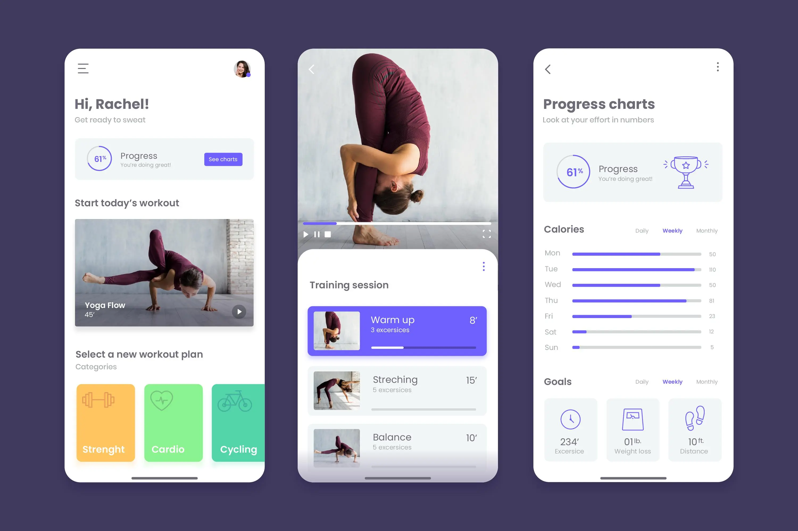

Home
About
Portfolio
Site Plan
Portfolio
“We are surrounded by data, but starved for insights.” ~ Jay Baer Case Studies Data Analysis Visualizations Dashboards “Data is a tool for enhancing intuition.” ~ Hilary Mason, data scientist and founder of Fast Forward Labs
Bella Beat Case Study

Consumer insights and Marketing Strategy
MYSQL
BigQuery
R
Tableau